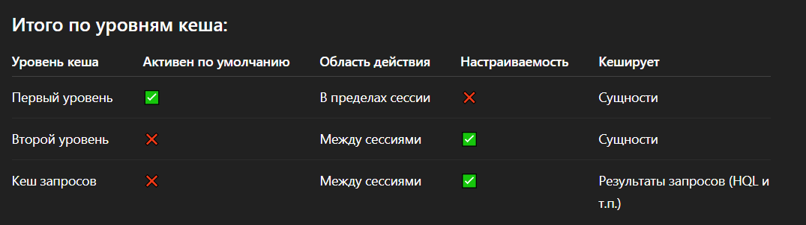

Hibernate
Что это
Hibernate - библиотека предназначенная для решения задач объектно-реляционного отображения (ORM), самая
популярная реализация спецификации JPA. Объектно-реляционная модель описывает отношения
между программными объектами и записями в БД.
Слои взаимодействия
- Application
- Spring Data JPA(Repository) - это механизм организации репозиториев, а репозиторий - это абстракция,
лежащая на уровень выше ORM.
- Java Persistence API(JPA) — спецификация API Java EE, предоставляет возможность сохранять в удобном виде
Java-объекты в базе данных. Имеет только интерфейс. Как реализация чаще всего используется Hibernate.
- Hibernate
- JDBC
- Relational Database
Минусы
- Необходимо отслеживать проблему "N+1"
Проблема "N+1" запросов возникает, когда при работе с базой данных выполняется один основной запрос для
получения списка объектов (N), а затем для каждого из этих объектов выполняется еще один дополнительный
запрос (+1). Это приводит к множеству SQL-запросов, что сильно снижает производительность.
Решения:
Если вам нужна максимальная производительность, лучше использовать JOIN FETCH или @EntityGraph.
- Fetch Join (JOIN FETCH) - позволяет загружать связанные сущности. Минусы: Может приводить к дублирующим
данным, если есть несколько связанных коллекций.
List<Book> books = entityManager.createQuery(
"SELECT b FROM Book b JOIN FETCH b.author", Book.class)
.getResultList();
- @EntityGraph - позволяет указывать, какие связанные сущности загружать сразу. Минусы: Не работает с
nativeQuery.
@EntityGraph(attributePaths = {"author"})
@Query("SELECT b FROM Book b")
List<Book> findAllWithAuthors();
- @BatchSize - загружать связанные объекты партиями, уменьшая количество SQL-запросов. Минусы: Не даёт
полного контроля над SQL-запросами. Минусы: Не даёт полного контроля над SQL-запросами.
@Entity
public class Book {
@ManyToOne
@BatchSize(size = 10) // Загружает авторов по 10 за раз
private Author author;
}
- @Fetch(FetchMode.SUBSELECT) - позволяет загружать коллекции через один подзапрос вместо множества
маленьких SQL. Минусы: Может быть неэффективным на больших объемах данных.
@Entity
public class Author {
@OneToMany(mappedBy = "author")
@Fetch(FetchMode.SUBSELECT) // Загружает все книги автора одним подзапросом
private List<Book> books;
}
- @NamedEntityGraph - создать предопределённые графы загрузки. Минусы: Нужно явно указывать граф в запросе.
@NamedEntityGraph(name = "Book.withAuthor",
attributeNodes = @NamedAttributeNode("author"))
@Entity
public class Book {
@ManyToOne
private Author author;
}
EntityGraph<?> entityGraph = entityManager.getEntityGraph("Book.withAuthor");
List<Book> books = entityManager.createQuery("SELECT b FROM Book b", Book.class)
.setHint("javax.persistence.fetchgraph", entityGraph)
.getResultList();
Java Persistence Query Language (JPQL)
JPQL - платформенно-независимый объектно-ориентированный язык запросов, являющийся частью спецификации Java
Persistence API (JPA). JPQL используется для написания запросов к сущностям, хранящимся в реляционной базе
данных.
Spring конфигурация application.properties
- spring.jpa.hibernate.ddl-auto=none - чтобы Hibernate не выполнял никаких действий по модификации схемы.
К примеру для работы через Liquibase.
Аннотации для управления
- @Entity(name = "") - указывает что данный класс является сущностью(entity bean). Такой класс должен:
- Иметь конструктор по-умолчанию (пустой конструктор) public или protected.
- Не может быть final и не может содержать final-полей/свойств;
- Должен содержать хотя бы одно @Id-поле.
- Не может быть вложенным, интерфейсом или enum
- @Table(name = "") - указывает с какой именно таблицей необходимо связать (map) данный класс.
Имеет различные аттрибуты для указания имя таблицы, каталог, БД и уникальность столбцов в таблице БД.
- @Id - указывает первичный ключ (Primary Key) данного класса.
- @GeneratedValue - Эта аннотация используется вместе с аннотацией @Id и определяет такие параметры, как
strategy и generator.
- @Column - определяет к какому столбцу в таблице БД относится конкретное поле класса.
Аттрибуты: name, unique, nullable, length.
- @Access - определяет режим доступа к полям. Мы можем использовать @Access на уровне класса, поля
или метода. Мы можем даже смешивать два типа в одном классе сущностей. По умолчанию тип доступа
определяется местом, в котором находится ваш идентификатор(@ Id). Если он будет в поле -
это будет AccessType.FIELD, если он будет в геттере - это AccessType.PROPERTY. Иногда вам может
потребоваться аннотировать не поля, а свойства (например, потому что вы хотите иметь какую-то
произвольную логику в геттере или потому, что вы так предпочитаете). В такой ситуации вы должны
определить геттер и аннотировать его как AccessType.PROPERTY.
- AccessType.FIELD - обычный доступа к полю.
- AccessType.PROPERTY - для доступа к полю через get/set.
Отношения между таблицами
Дополняется CascadeType, FetchType и др.
- @OneToOne - рекомендуется EAGER.
- @OneToMany - рекомендуется LAZY.
- @ManyToOne - рекомендуется EAGER.
- @ManyToMany - рекомендуется LAZY.
CascadeType
- CascadeType.PERSIST - сохранение нового дочернего объекта, вместе с родителем(save()/persist()).
- CascadeType.MERGE - обновление родителя вместе с дочерним.
- CascadeType.REMOVE - удаление родителя вместе с дочерним.
- CascadeType.REFRESH - синхронизация родителя и дочернего с базой.
- CascadeType.DETACH - при работе вне транзакции чтобы "отвязать" объект от сессии.
- CascadeType.ALL - выполнение каскадно сразу все операции.
Советы и подводные камни
- REMOVE может быть опасен: удалит дочерние объекты — даже если вы этого не хотите.
- PERSIST не работает, если дочерний объект уже в базе — используйте MERGE в этом случае.
- CascadeType.ALL удобно, но не всегда безопасно — лучше указывать только нужные каскады.
JPA имеет 2 типа загрузки(FetchType)
- LAZY(by default) - ORM загрузит сущность или коллекцию отложено, при первом обращении к ней из кода.
- EAGER - заставляет ORM загружать связанные сущности и коллекции сразу, вместе с корневой сущностью.
Entity states:
Эти состояния определяют, управляет ли объектом Persistence Context (Session) и как Hibernate синхронизирует
его с базой данных.
Transient
- Объект создан в JAVA(new).
- Нет связки с Hibernate Session.
- Нет идентификатора из БД.
Persistent
- Объект под управление Session.
- Hibernate отслеживает изменения и при flush() синхронизирует их с БД.
- У объекта есть ID(первичный ключ)
Detached
- Объект ранее был persistent, но теперь Session закрыт или объект явно отсоединён.
- Hibernate больше не отслеживает изменения.
- При изменении объекта, изменения не сохраняться в БД.
- Чтобы снова сделать его persistent, нужно использовать update(), merge() или снова загрузить через Session.
Removed
- Объект помечен на удаление с помощью session.delete()
- Hibernate удалит его из БД при flush()
- Пока не произошёл commit, объект остаётся в памяти.
Session methods - методы получения данных
get()
- Немедленно выполняется запрос.
- Если записи нет, вернет null.
- Вернет полностью инициализированный объект(eager load) по этому медленнее чем Load().
- Если вы не уверенны, что запись есть - используйте get().
load()
- Возвращает прокси без немедленного запроса(ленивая загрузка).
- Запрос к базе выполняется только при обращении к полям объекта.
- Если объекта нет вернет ObjectNotFoundException. Вернет proxy объект (lazy load)по быстрее чем Get().
Если вы уверенны что объект есть - используйте Load().
Hibernate Caches levels
Session Cache - First-level cache(L1)
- Встроенный по умолчанию и отключить его нельзя.
- Ассоциирован с конкретной Session.
- Все сущности, загруженные в рамках одной сессии, хранятся здесь.
- Повторный запрос к БД за ту же сущность (по ID) не выполняется — берётся из кэша.
- Живёт до закрытия Session.
- Очищается при закрытии сессии или при вызове session.clear() / session.evict().
Session session = sessionFactory.openSession();
User user1 = session.get(User.class, 1); // первый запрос — из БД
User user2 = session.get(User.class, 1); // второй запрос — из кеша (не из БД)
SessionFactory Cache - Second-Level Cache(L2)
- Опциональный, включается вручную.
- Ассоциирован с SessionFactory, а значит — общий для всех Session.
- Позволяет разделять кэш между разными сессиями.
- Обычно используется для кэширования часто читаемых и редко изменяемых данных.
- Поддерживается через сторонние кеш-провайдеры:
1.Ehcache
2.Infinispan
3.Hazelcast
4.Caffeine
- Настраивается через аннотации или XML.
- Может кэшировать:Сущности, Коллекции, Натуральные ID
Пример настройки:
<property name="hibernate.cache.use_second_level_cache">true</property>
<property name="hibernate.cache.region.factory_class">org.hibernate.cache.ehcache.EhCacheRegionFactory</property>
Аннотация в сущности:
@Cacheable
@org.hibernate.annotations.Cache(usage = CacheConcurrencyStrategy.READ_WRITE)
@Entity
public class User { ... }
Query Cache
- Дополнительный уровень поверх второго.
- Кеширует результаты HQL/JPQL/Criteria-запросов.
- Требует включённого второго уровня кеша. Включить query cache (hibernate.cache.use_query_cache=true).
Явно указывать .setCacheable(true) в запросе.
- В кэше хранится не сами объекты, а список ID, а сами объекты берутся из второго уровня кэша.
Включается отдельно:
<property name="hibernate.cache.use_query_cache">true</property>
